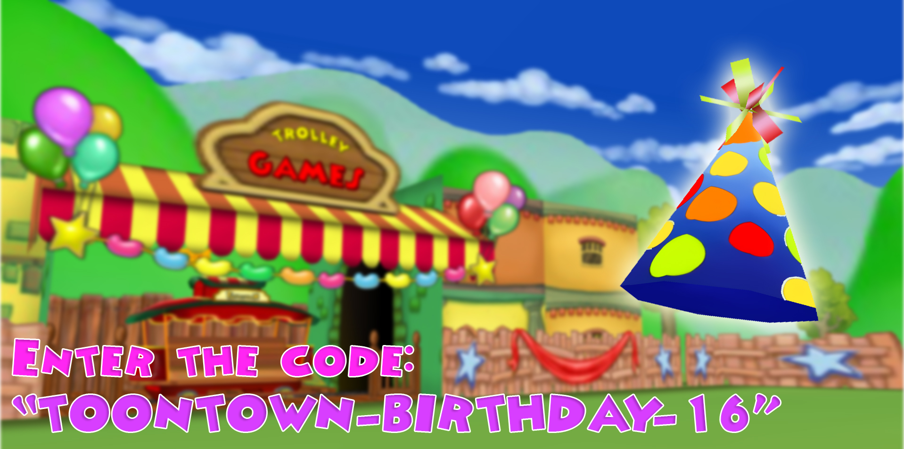

Happy 16th Birthday, Toontown!
Posted by: The Toontown Relived Team on June 2, 2019 at 6:12 PM
After many years of defeating Cogs, making memories, and figuring out why Doctor Dimm still smells, we finally made it once again to celebrate Toontown's 16th Birthday.

Toontown sure has had a lot of updates and content that never saw the light of day, but today is a day to not only reflect on the game, but to reflect on the community behind it. Toontown, as a whole, is still growing day by day and we're sure that it's going to be like that for quite a while.
Just like before, the Toon Council has re-opened the Party Grounds with the help of the residents of Toontown. Head over to the Party Gate in Toontown Central and walk into it to head to the Party Grounds! Upon arriving, you'll immediately see that our own Toons have constructed a Trolley, dug a big hole for a fishing spot, and are even teaching the Toons new methods to dance!

Don't forget to enter the code "toontown-birthday-16" to get your party hat. The fun doesn't stop here, Toons. While Toontown's birthday may only last one day, we're preserving the Party Grounds throughout the entire summer! The Toon Council already has brand new ideas for it coming in the following weeks. Happy Birthday, Toontown!